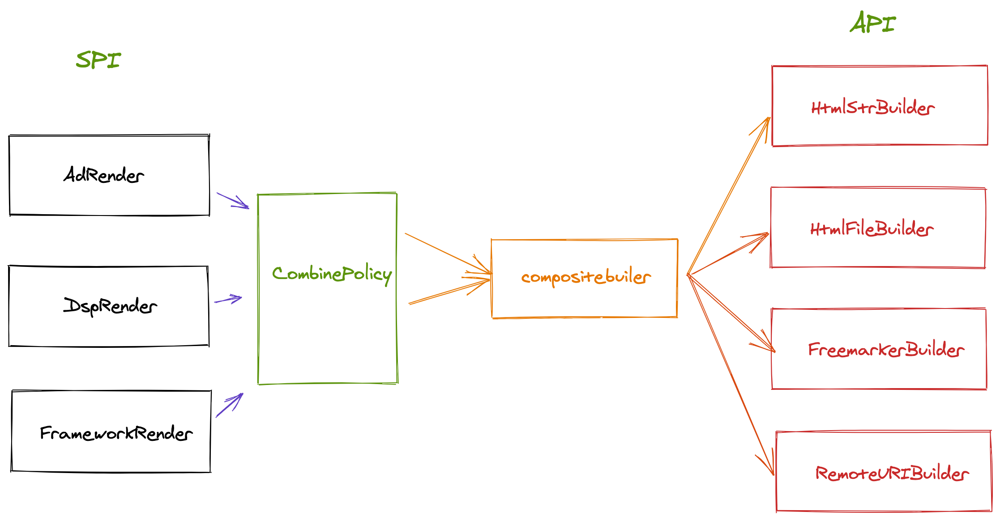

背景
在公司从事CRM系统设计的时候，产品设计之初有个功能需求就是需要导出合同文件（PDF)以及提供预览功能。其中合同包括单次广告合同，DSP合同，框架合同以及认刊书等等，每种合同的内容和格式都不相同。
思考
无论什么合同，从主题内容上来看，都包括静态部分和动态部分；（所谓静态即内容针对与所有的合同都是一样的，而动态内容则需要不同的数据来渲染成不同的格式 ）。为此，想到了dubbo官网中关于api与spi的分离的设计。
技术上，选用的itext7的技术实现。 如果编码去写合同的cell肯定不现实，而且后期的可维护性和可拓展性太差。比如实时变更合同上的条款内容， 需要重新发版，代价高。所以选择html+freemarker+itext的实现方案。
其中渲染成pdf这个功能本身而言是和业务无关的。其中包含的实现方式
- str -> pdf
- html -> pdf
- freemarker + model -> pdf
为了实现实时性的需求，需要让运营的同事维护合同模板然后从远程文件系统(fastdfs, ali-oss, tencent等)读取文件内容信息然后渲染成 pdf文件。
而一个pdf文件其实由多种渲染方式共同组成， 自然而然的想到了组合模式。为此，关于 PDF的API可以设计如下
实现
有了上述的思考作为铺垫之后， 真正到落地需要配合数据库，应用层的代码和第三方存储系统共同参与方能完成一个完整的pdf导出模块。

可以看出 SPI对应的是 Render的设计， API对应的是Builder的设计。而中间的CombinePolicy则是交付给运营人员配置和管理的。
总结
在一个简单的PDF导出功能设计和实现中，设计模式包含了策略模式，桥接模式，组合模式，模板方法模式和装饰器模式 。从后期的业务上实现了可扩展性设计。
实现细节
- 每一种的合同导出的render可以设计单例的（无状态）以达到高性能的目的
- 模板的flush的api的参数设计成OutputStream，方便后期的导出以及预览
- 要释放pdf文件资源，避免内存溢出的问题。 （IO资源一定要关闭 ）
- 无论是ftl或者html文件都可以支持实时的更新和渲染，但是要加上缓存层（装饰器设计)
- builder可以采用模板模式实现，避免业务逻辑冗余。